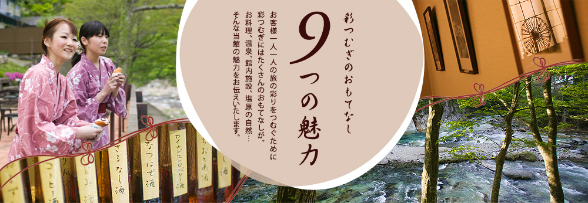
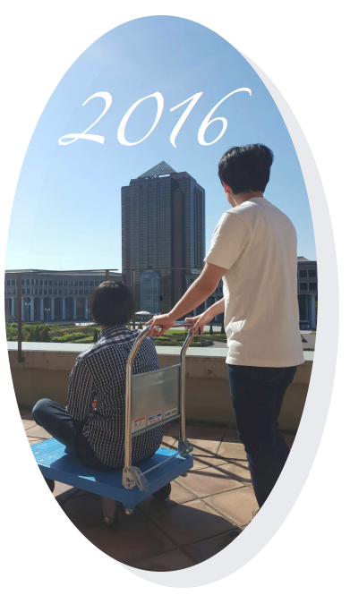

2016年度
１月中旬には、内定第１号。次いで、３月１日の情報解禁日前までには、１月に内々定獲得したメンバーを含めた５名が内々定獲得（内々定立３０%）。就活の外部環が好転してきている影響もあり、近来にない速いペース、それこそ爆速の内定報告ラッシュ。その後、３月末日までには、就活中の卒研究生の約６０%のメンバーから内々定の報告がありました。
４月末の時点では、内々定率は８８%を超える結果となりました。複数の企業から内々定を獲得した学生も多数にのぼりました。

2015年度
全員卒業: ○
・卒研ⅡS評価者数 ダントツNo.1
・軽部賞受賞者数 ダントツNo.1
進路状況： 就活(どこよりも早く、高く) ○、進学 X
社会人デビュー:学会発表など15／17達成、その他1名アイドルデビューで、ほぼ達成 ○
社会的評価: ◎
・IPSJ学生奨励賞 9年連続、3名
・Mashup 応募5名、決勝進出、1名
・小学校総合学習貢献、計4回実施
2014年度